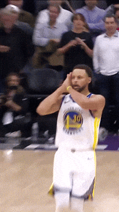

A tag href define um HIperlink(conexão), que é utilizado para vincular uma página a outra.
O atributo mais importante desta tag é o href que define a página de destino que será exibida após o clique do mouse no link.
Por padrão, os links aparecerão da seguinte forma em todos os navegadores:
um link não visitado é sublinhado de azul
um link visitado é sublinhado de rodo
um link é sublinhado de vermelho
Link para o arquivo h1 - h6
Clique aqui para voltar sobre H1- H6
Link para o site do SENAI Suzano
Clique aqui para visitar a página do SENAI Suzano
Para que o link abra a página em uma nova guia devemos
acrescentar o atributo
Clique aqui para abrir o link em uma nova janela do navegador
Você também pode utilizar a tag button para adicionar um botão clicável no link
Clique no botão para abrir o link. em uma nova janela do navegador
Você também pode utilizar um gif
Clique  para abrir o link. em uma nova janela do navegador